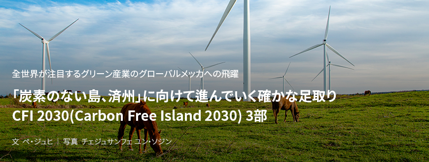
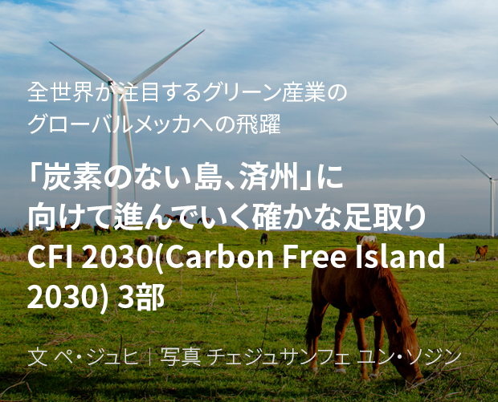
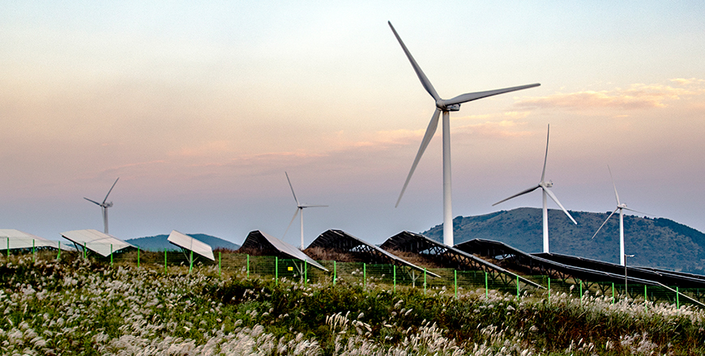
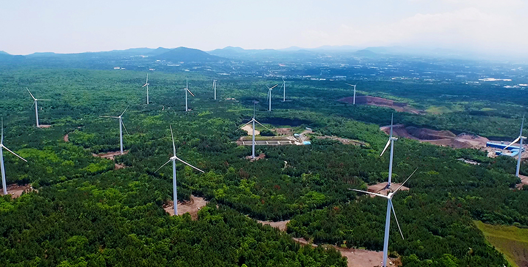
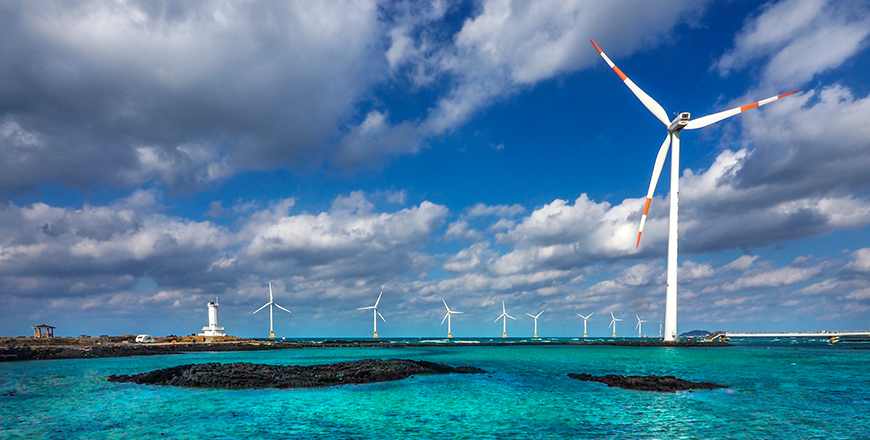
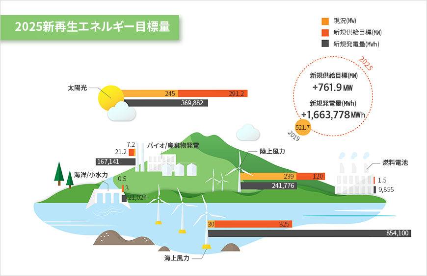
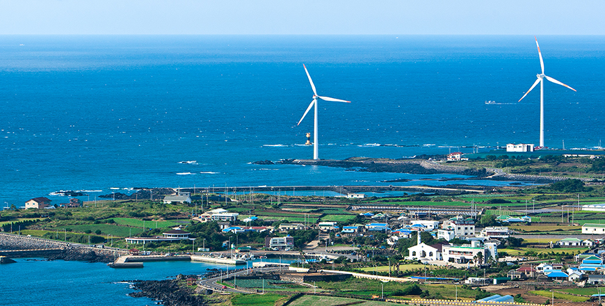

기획취재콘텐츠
- Home
- 제주라이프
- 기획취재콘텐츠
CFI 2030(Carbon Free Island 2030) 3部새로운 글


エネルギー自立とクリーンな自然に向けた努力、新再生エネルギー産業
四方を囲む海、温かく降り注ぐ日差し、時には静かに、時には強く吹き荒れる風、その風によって頻繁に高低が変わる波。そのすべてが 五感で満喫できる済州道の自然の姿であると同時に済州が持つ豊かな新再生エネルギーの資源でもある。済州道はこのような自然資源を基に以前から新再生エネルギーを研究・開発し、活用してきた。
特に、済州道は1970年から風力発電をスタートし、その歴史はおよそ50年に至る。長い時間をかけて現在のような風力発電団地の概念と原型を作り上げたのである。80年代からは太陽光発電をスタートし、風力と太陽光、共に初期には開発・研究が中心だったが、90年代後半には韓国初の商用風力発電団地を造成し、韓国の風力発電のメッカとして成長してきた。

- 済州道は豊富な日照量と風を資源にして早くから新再生エネルギーを発掘・開発してきた。
写真は風力発電機と太陽光パネルが設置されている加時里国産化風力発電団地。
済州エネルギー公社 エコ写真コンテスト受賞者イム・ハンスン氏の作品。 ⓒ済州エネルギー公社提供 -
写真は風力発電機と太陽光パネルが設置されている加時里国産化風力発電団地。
済州エネルギー公社 エコ写真コンテスト受賞者イム・ハンスン氏の作品。 ⓒ済州エネルギー公社提供 -

- 東福里陸上風力発電団地の全景 ⓒ済州エネルギー公社提供 -
現在、済州にある風力発電団地のエネルギー供給量は陸上と海上を合わせて290MW、太陽光発電の供給量は260MW程度で、風力と太陽光がほとんどを占める二大軸のエネルギー源構造となっている。その他のエネルギー源としては家畜の糞尿から発生するバイオガス、廃木材などの廃棄物、太陽熱などがあり、その他テスト実証事業としては波の動きで電気を生産する波力発電なども推進している。このように、環境資源を多様に活用する済州の新再生エネルギーの総普及率は2019年基準全国平均の8％台を大きく上回る14.03%で新再生エネルギー普及率がj韓国で最も高い地域として、その先頭に立っている。

- 海上風力発電団地が造成されている新昌風車海岸道路
済州エネルギー公社 エコ写真コンテスト受賞者キム・テホ氏の作品。 ⓒ済州エネルギー公社提供 -
済州エネルギー公社 エコ写真コンテスト受賞者キム・テホ氏の作品。 ⓒ済州エネルギー公社提供 -
済州道が風力エネルギー産業に特化した理由は、制度的基盤がしっかりと築かれていたためだ。済州道は済州特別法によって済州の陸上・海上風力発電に対する発電事業の許可権限が産業通商資源部長官から済州道知事に移譲され、地域的特性を反映した別途の許可基準と地区指定に関する条例・告示が制定・導入された。地区指定とは、風力発電に適合した敷地や海岸の町をあらかじめ調査・指定することで、地区指定となった地域を対象に候補地を公募し、その後、評価・審議など風力団地造成事業を行う法的根拠となる。このような制度を済州は初めて定着させた。類似した全国的な制度としては計画立地制度があるが、法律改正の問題で実際にはあまり活用されていないという。
現に風力発電は規模が大きいため、事業を迅速に進めることが難しい。計画の発表や進行の過程で必要な資金も莫大で広範囲な敷地が必要なこともあるが、何よりも住民が受け入れるかどうかを考慮しなければならないからだ。風力発電事業の施行を主に担当する済州エネルギー公社が最も気を使っているのも住民に受け入れてもらうための活動である。以前の事業許可方式は事業者が町の利害関係者との協議なしに事業の許可申請をするなど、地域住民と葛藤を引き起こす場合が多かったが、今は地区指定条例を適用し、最初から各町を対象に候補地を公募して申請を受け、利害関係者との協議と審議などを行う方式で進めている。整備された制度のおかげで、葛藤がもたらすコストや時間の無駄遣いを最少化することができた。


2025新再生エネルギー目標量 (新規供給目標 +761.9(MW), 新規発電量 +1,663,778(MW))
| 区分 | 現況(MW) 2019 | 新規供給目標(MW) | 新規発電量(MW) |
|---|---|---|---|
| 太陽光 | 245 | 291.2 | 369,882 |
| バイオ/廃棄物発電 | 7.2 | 21.2 | 167,141 |
| 陸上風力 | 239 | 120 | 241,776 |
| 燃料電池 | - | 1.5 | 9,855 |
| 海洋/小水力 | 0.5 | 3 | 21,024 |
| 海上風力 | 30 | 325 | 854,100 |

このように量的、質的に拡大している新再生エネルギー産業だが、ここからさらに派生する産業やサービスには部分的に限界が存在する。派生産業としては発電設備のメンテナンスが大きな割合を占め、付加価値の高い製造業や発電産業に伴う金融、経済、経営、法律サービスの面については未だに制度の整備や人材育成などが不十分な状況であるという。しかし、専門家はこれらの分野における新再生エネルギー市場の拡大可能性は十分存在しており、派生産業を育成するためには技術的な問題の解決も重要だが、中央政府の予算支援と法・制度的な支援が欠かせないと述べている。
炭素のない島に向けた止まらない足取り

- 新昌里風力発電団地
済州エネルギー公社 エコ写真コンテスト受賞者イ・スンゴン氏の作品。ⓒ済州エネルギー公社提供 -
済州エネルギー公社 エコ写真コンテスト受賞者イ・スンゴン氏の作品。ⓒ済州エネルギー公社提供 -
済州道は今、電気自動車と新再生エネルギー産業という二大軸を土台に「炭素のない島」というビジョンに向けて着実に歩み続けている。二つの産業が発展してきた過程を見てもわかるように、済州道は法・制度、計画・実行、道民意識などあらゆる面で韓国をリードする立場に立っている。先駆者の前には答えの分からない問題が山積しているが、その歩んだ道は、後を追う者にとっては間違いなく道しるべになるはずだ。それがエネルギー転換の先駆者である済州道のプライドであり、責任であり、義務ではないだろうか。
다음글